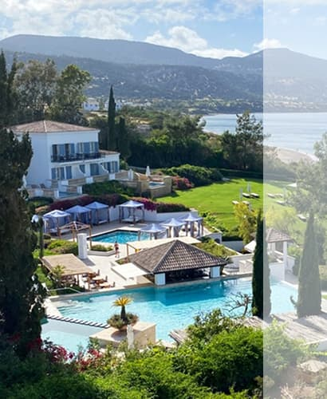

<section class="moving">
  <div class="container moving-container">
    <picture>
      <source
        srcset="
          /img/moving/moving_left_desc.jpg,
          /img/moving/moving_left_desc@2x.jpg 2x
        "
        media="(min-width: 1440px)"
      />
      <source
        srcset="
          /img/moving/moving_left_tab.jpg    1x,
          /img/moving/moving_left_tab@2x.jpg 2x
        "
        media="(min-width: 768px)"
      />
      <source
        srcset="
          /img/moving/moving_left_mob.jpg    1x,
          /img/moving/moving_left_mob@2x.jpg 2x
        "
        media="(max-width: 767px)"
      />
      
    </picture>
    <div class="moving-content">
      <h2 class="moving-title">Moving to Paradise</h2>
      <p class="moving-text">
        Have you ever dreamed about the perfect place to live? Your definition
        of perfect may be different someone else’s. Are you longing to live by
        the beach and listen to the soothing waves or are you a kind of person
        who enjoys the bustling sounds of the city? Whatever lifestyle you
        desire, Cyprus has it all! Whether you’re travelling with your family,
        your partner, or as a solo business entrepreneur, this exotic island can
        offer you a little bit of everything.
      </p>
      <p class="moving-text">
        If you’ve made the decision to relocate to Cyprus, then you are
        expecting to find a safe place to settle. With extremely low crime rate,
        stunning sandy beaches, and awe-inspiring mountain views, Cyprus is the
        place to be!
      </p>
      <button class="moving-button">Find Out More</button>
    </div>
    <picture>
      <source
        srcset="
          /img/moving/moving_right_desc.jpg    1x,
          /img/moving/moving_right_desc@2x.jpg 2x
        "
        media="(min-width: 1440px)"
      />
      <source
        srcset="
          /img/moving/moving_right_tab.jpg    1x,
          /img/moving/moving_right_tab@2x.jpg 2x
        "
        media="(min-width: 768px)"
      />
      <source
        srcset="
          /img/moving/moving_right_mob.jpg    1x,
          /img/moving/moving_right_mob@2x.jpg 2x
        "
        media="(max-width: 767px)"
      />
      
    </picture>
  </div>
</section>
